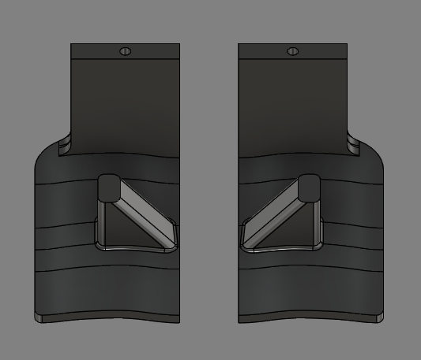

soph week 4/28 - 5/2
missed monday, limited work this week.
wings
after testing the 3d printed wings, the gap between them felt awkward, so i merged them into a single piece.
original wings (left) vs new merged design (right)
also reintroduced trigger stands with larger pegs for better durability. added small rectangular blockers to the pcb stands to prevent movement - these should lock the pcb in place while allowing removal.
test prints of the updated shell and triggers:
trigger adjustments
fixed the length miscalculation (eyeballed ~2mm {which is still too small}) from last print (though forgot to implement before printing). also modified the angle to reduce overhang, which slightly decreased the button surface area.
had to relocate the stands to accommodate these changes - hopefully this doesn’t cause issues later.
solder fail
tried resoldering the pcb for sensor testing. and well, it failed.
thankfully miles offered to help with resoldering. hoping the pcb isn’t permanently damaged. (thank you so much)
errors to fix?
in order to add the stands to stabilize the pcb, i had to increase the length of the original stands a lot, resulting in the led potentially being too high and not hitting the sensor block.
this is gonna be something i have to check over when i get a working usb wire (hopefully my board still works) which may take a bit.
additionally i’m hoping that the mouse triggers and shell with the stands are able to print without any blemishes or major imperfections.
besides putting it all together and testing, i’m slowly creeping closer to finishing this project.